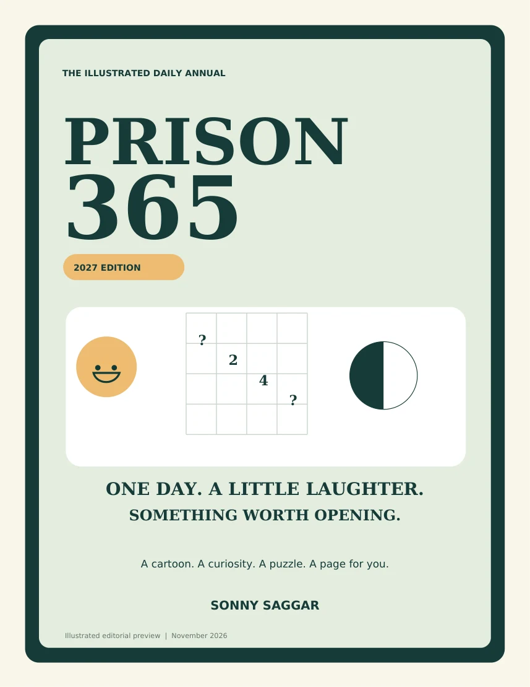
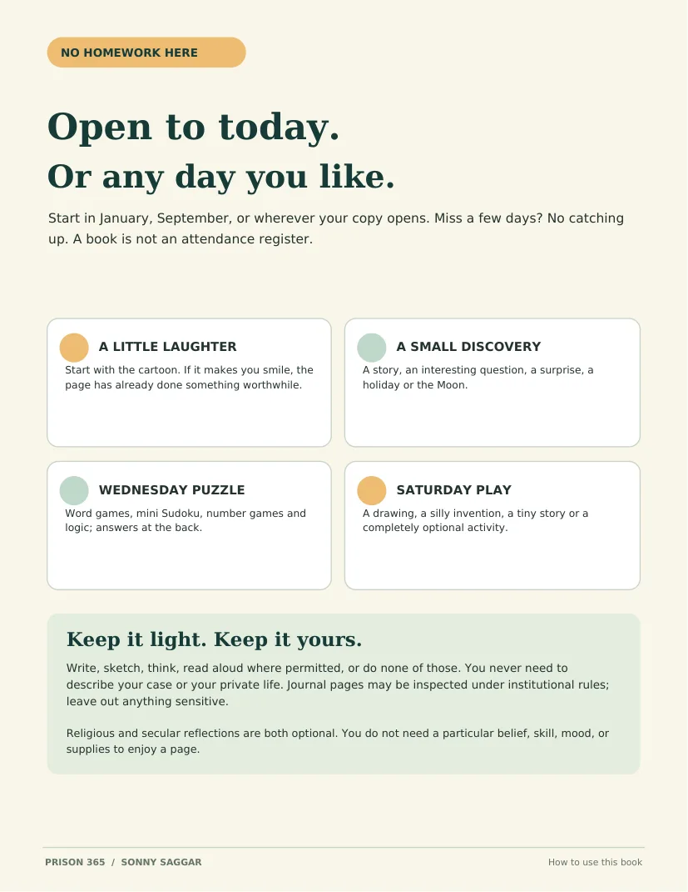
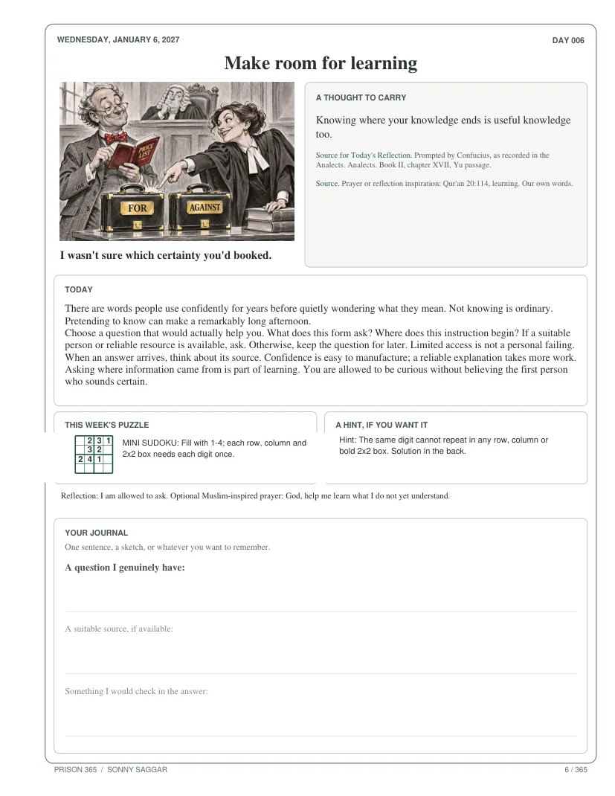
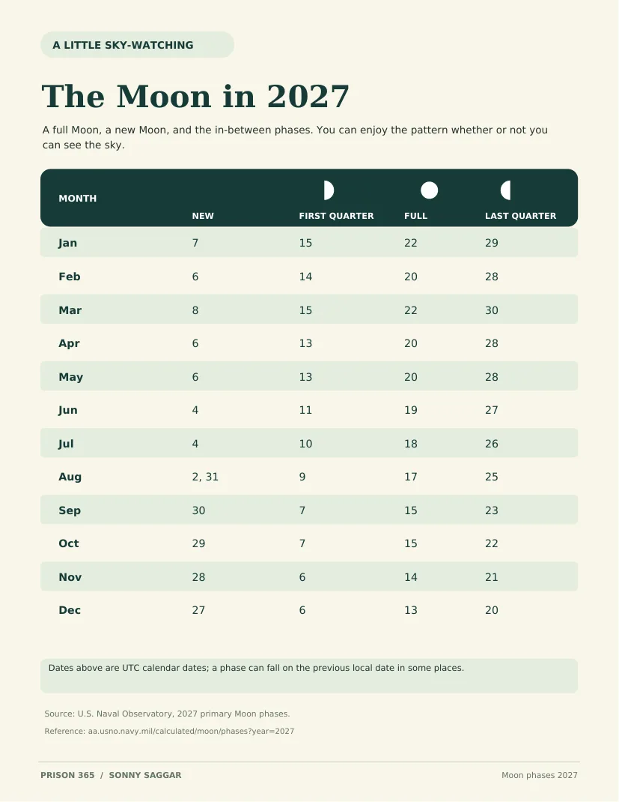

For families & friends
See the book, then check the receiving facility's exact book rules before ordering.
Read family guide365 daily pages of cartoons, curious ideas, small puzzles and writing space. Created with people in prison in mind—and for anyone who could use a brighter five minutes.
2027 edition in editorial review. Not yet available to purchase.

Publication update: The 2027 illustrated edition is in final review. This is a preview, not an order page. Any proposed delivery to an institution must follow its individual rules.
Three ways to use the preview
See the book, then check the receiving facility's exact book rules before ordering.
Read family guideReview the contents, limitations, and a clear route for requesting a review copy or discussing bulk orders.
Institutional reviewTry a puzzle, read original sample pages and see how the book was designed. No sign-up.
Try a puzzleOpen to today, start somewhere else, or just enjoy the cartoon. There is no streak to keep and no obligation to share your answers.
Illustrated cartoons, short punchlines and ordinary absurdities. Sometimes the best use of a page is a two-second chuckle.
A quick reading, unexpected question, short story or fact that gives the mind somewhere interesting to go.
Mini Sudoku, word games, number puzzles, drawing ideas and creative prompts. Hints and answers when you want them.
A sentence, a sketch, a small observation—or nothing. Use the page however you like.
Holidays, seasonal landmarks and observances across religious and nonreligious traditions, with room for different experiences.
Show someone a cartoon, trade a riddle, or send a thought in a permitted letter or call. Reading alone is just as good.
These are authentic pages from the November 10 revised 2027 editorial preview: the new welcome, a Wednesday puzzle, and the 2027 Moon reference.



Preview material may change before the final print edition.
A playful 4×4 mini Sudoku, based on the sort of short diversions in the book. Fill each row, column and two-by-two box with 1, 2, 3 and 4 exactly once. No account, tracking or score.
The shaded numbers are fixed. Choose a blank square, then type 1–4. It also works with a keyboard.
Take your time. The puzzle isn't going anywhere.
Look for a row or column with only one missing number. You can solve this without guessing.
“We formed a committee to save time. Its first meeting lasted three hours.”
The book is also full of quiet questions, curious facts and small surprises. Some pages are worth showing someone else; some are just for you.
Read the genuine sample pagesAs a boy, Sonny Saggar loved activity annuals: something to draw, make, solve, or discover when he turned the page. His experiences in Alton City Jail and Terre Haute Federal Prison Camp later gave that memory a new meaning.
Prison 365 grew from the idea that even a constrained day can contain something worth reading—a joke, a puzzle, a small surprise, or somewhere to put a thought.
Sonny Saggar · Author of Prison 365
Choose the part that is useful to you. No one needs to explain why they are here.
Offline pages, optional activities, and no need to discuss a case. Written pages may be inspected under institutional rules.
Preview a page to share. Ask the receiving institution about book-source and shipping rules before buying.
An optional daily companion; not a legal or prison-entry guide. Confirm property and book rules with the institution.
Your view of what would have made a page actually useful can shape the next edition, without sharing private details.
Review the sample for suitability, readability and group use. Institutional acceptance is never assumed.
A gentle book to consider recommending, not legal advice, clinical treatment or a claim about anyone's guilt.
The updated annual includes a 2027 reference to new, quarter and full Moons. It is an invitation to curiosity, not an assignment to go outdoors or follow a ritual.
The chart uses Universal Time; local dates may differ.
See the lunar page in the preview PDFIf someone you care about is incarcerated, choosing a thoughtful book can be complicated. Prison 365 is designed to offer companionship without asking for an emotional performance.
It's equally welcoming to someone who wants a laugh, enjoys a puzzle, likes to read, or simply wants a quiet place for a few minutes.
Ask about availability →Every institution can have different rules. When ordering becomes available, confirm:
Important: We cannot guarantee acceptance or delivery to any specific facility. Please check the receiving institution's rules before ordering.
Prison libraries, literacy programs, book-to-prison organizations and community groups can request a review copy or discuss a possible future order. We won't claim approval, impact or existing partnerships that haven't been documented.
Check the actual sample pages, jokes, puzzle levels, print legibility and how the content fits your readers.
Open sample PDFInvite voluntary anonymous feedback from readers where permitted. Feedback can be positive, negative or simply “not for me.”
Discuss a pilotWhen print economics and delivery routes are verified, explore purchasing copies for a program or sponsoring books through an approved distributor.
Ask about bulk copiesThis book does not provide legal advice or clinical care. A receiving facility has the final say on permissible publications. No institution, nonprofit or agency is represented as endorsing this project.
Not yet. The 2027 edition is undergoing final editorial, illustration, print and distribution review; its updated opening and lunar calendar are now available to preview. You can request updates by email below.
No particular religious belief is required. The book includes secular reflections as well as occasional holiday and faith-related references. Participation, prayer and reflection are optional.
No internet is required to read it. Many activities can be done mentally; some readers may prefer a pencil for writing and puzzles, where permitted by the facility.
No. Readers are not asked to disclose case histories, explain a conviction, or discuss private experiences. Written pages may still be inspected under an institution's rules; no book can promise confidentiality.
Yes. It is written with incarcerated readers in mind, but the cartoons, curious questions, puzzles and journal space can appeal to family, friends and other readers too.
Yes, contact the author to discuss a prospective pilot or future bulk order. There are no confirmed institutional approvals or fulfilled bulk orders to claim yet.
That depends on the institution and approved shipping channels. Requirements vary, so direct-to-facility ordering will not be advertised as available until verified.
Interested in the paperback, a family copy, institutional distribution or reviewing sample pages? Send a note and tell us what would make this book useful.
Opens your email app. No automatic mailing list or data collection.